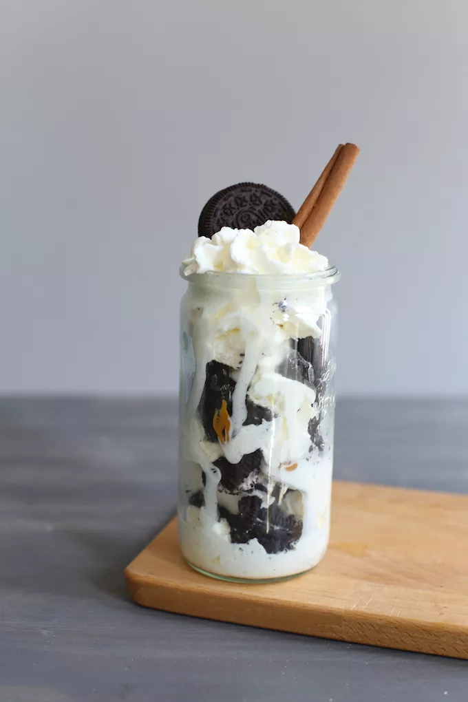

Oreo ijs met karamel

Ingredienten
- 5-6 oreo koekjes
- 100 gr vanille/roomijs (200 ml)
- karamelsaus
- opgeklopte slagroom
- snufje kaneel
Bereiding
- Hak de oreo's in stukjes.
- Pak een bakje of een glas.
-
Begin met een bodempje ijs, vervolgens met wat Oreo koekjes,
daarna een klein beetje karamelsaus en een toefje slagroom.
- Herhaald dit tot uw glas vol is.
- Afmaken met een snufje kaneel.